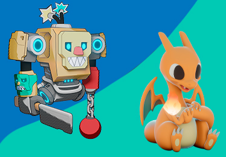
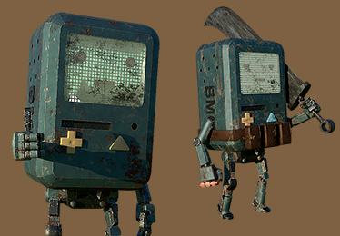
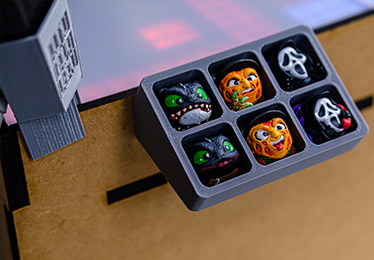
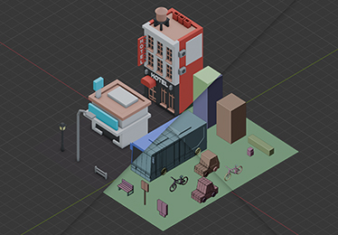
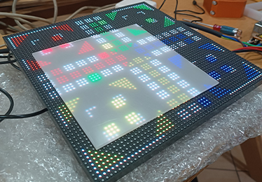
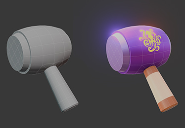

Projetos

Modelagem & Escultura 3D
Criação de modelos 3D como ponto de partida para ideias, personagens e mundos. Estudos de forma, estilo e identidade visual, explorando desde o low poly estilizado até peças mais detalhadas.

Animação
Animação como ferramenta de narrativa e expressão. Testes de movimento, loops, acting e experimentos visuais que buscam dar vida aos personagens e ideias, mesmo em projetos pequenos e estudos rápidos.

Impressão 3D
Do digital para o físico. Projetos pensados para impressão 3D, prototipagem, testes de peças funcionais ou decorativas. Aqui a ideia é entender limites, com erros, ajustes e aprendizados no caminho.

Jogos
Exploração de jogos como sistemas interativos. Protótipos, ideias, mecânicas e experimentos que misturam arte, design e programação.

Códigos e Técnologia
A parte invisível que faz tudo funcionar. Um espaço para testar ideias, criar soluções e entender como unir tecnologia e criação de forma prática.

Ensino e Conteúdos
Cursos, oficinas, workshops e materiais gratuitos voltados para quem quer aprender 3D, tecnologia e criação digital de forma prática.
Experimente em 3D
Gire, aproxime e explore o modelo
Uma pequena vitrine interativa para personagens, props, esculturas ou protótipos. Arraste para rotacionar, use o scroll para zoom e explore os detalhes direto na página.
Use o mouse ou toque na tela para rotacionar, aproximar e explorar.
Pensando em voz alta

O valor do processo (mesmo quando não dá certo)
Posted in X
Nem todo projeto chega onde a gente imaginou. Alguns travam, outros mudam de rumo, e muitos acabam ensinando mais pelo caminho do que pelo resultado final. Aqui compartilho reflexões sobre tentativa, erro, ajustes e tudo aquilo que normalmente fica escondido quando só mostramos o que “deu certo”.

O que jogos me ensinaram sobre design
Posted in LinkedIn
Jogos são mais do que diversão. Eles ensinam sobre clareza, escolhas, feedback e experiência do usuário de um jeito muito direto. Neste texto, compartilho aprendizados que vieram do game design e acabaram influenciando projetos de 3D, interfaces, sistemas. Design fica mais claro quando alguém precisa interagir com ele.